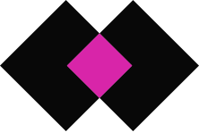

Lab Hacker
O que fazemos
Participação
O LabHacker estimula o desenvolvimento de ações e ferramentas que ampliem a participação social no processo legislativo. É gestor do Portal e-Democracia, que apresenta diversos modelos de participação, como interação em audiências, edição colaborativa de projetos de lei e debates temáticos. As ferramentas do e-Democracia também serão utilizadas por outros órgãos do Legislativo e do Executivo.
Transparência
Incentivamos o desenvolvimento de aplicações digitais que permitam a visualização mais intuitiva e simplificada das informações legislativas. Produzimos ferramentas em código aberto e as liberamos no github para aperfeiçoamento e uso do software sem custos por outros órgãos públicos. Em 2017, trabalhamos na elaboração do guia de Parlamento Aberto, que orienta as vertentes de transparência, participação social e controle social para melhor capacitar os órgãos do Legislativo.
Experimentação

O LabHacker é um espaço de liberdade para experimentos e aprendizagem, onde o erro é permitido em busca da inovação, do olhar fora do convencional. Aqui realizamos testes de usabilidade para produtos e serviços, sempre com foco no interesse do cidadão. Também experimentamos ferramentas e debatemos o uso de novas tecnologias para disseminar as melhores práticas.
Colaboração

O LabHacker trabalha em colaboração com uma rede de desenvolvedores e de ativistas cívicos, tanto para melhorar seus projetos e ferramentas quanto para ampliar a participação social e a transparência no Legislativo. O trabalho colaborativo está no planejamento inicial das atividades; na troca de informações e expertise; e na facilitação de processos para aumento da transparência e da participação.
Inspiração

Também realizamos eventos e atividades com especialistas e pessoas inspiradoras para trocar a cultura da burocracia e zona de conforto pela inovação no serviço público; disseminar casos de sucesso nas mais variadas áreas; além de falar sobre cidadania e tecnologia para diferentes públicos.
Mande sugest√µes, cr√≠ticas ou ideias pra gente desenvolver üòâ
labhacker@camara.leg.brO LabHacker é uma iniciativa da Câmara dos Deputados
Quem Somos
O LabHacker é um espaço para promover o desenvolvimento colaborativo de projetos inovadores em cidadania relacionados ao Poder Legislativo. Criado pela Resolução 49, de 2013, este laboratório dentro da Câmara dos Deputados tem o objetivo de articular uma rede entre parlamentares, hackers e sociedade civil que contribua para a cultura da transparência e da participação social por meio da gestão de dados públicos.
Além de estimular o desenvolvimento de aplicações digitais que permitam a visualização mais intuitiva e simplificada das informações legislativas, o LabHacker promove atividades como maratonas hackers (hackathons), hackdays sobre temas inovadores, além de oficinas de criação e discussão com especialistas, parlamentares, estudantes de universidades e escolas públicas, e crianças interessadas em tecnologia.
O laboratório também é responsável pela governança do portal e-Democracia, uma plataforma de participação que amplia a transparência da atividade legislativa e a interação entre os parlamentares e a sociedade.
Qualquer pessoa interessada em projetos de cidadania, especialmente programadores e desenvolvedores de softwares, pode trabalhar livremente no ambiente do LabHacker. Visite-nos no Anexo IV da Câmara, Subsolo, sala 90.
 Cristiano Ferri Faria üèÅ
Gestor de projetos de Parlamento Aberto
Cristiano Ferri Faria üèÅ
Gestor de projetos de Parlamento Aberto
Cristiano foi o primeiro Diretor do LabHacker da Câmara dos Deputados. É também idealizador do Portal e-Democracia. Como servidor da Câmara dos Deputados desde 1993, tem trabalhado em projetos relativos ao processo legislativo, qualidade da lei, transparência legislativa, democracia digital, atividades colaborativas (maratonas hacker) e inovação. É Doutor em ciência política e sociologia pela Universidade do Estado do Rio de Janeiro - Instituto de Estudos Sociais e Políticos, Mestre em Políticas Públicas pela Queen Mary College - Universidade de Londres e pesquisador associado do Ash Center for Democratic Governance and Innovation da Universidade de Harvard.
Roberta Rabay üö¢
Diretora - FC-03
Roberta é diretora do LabHacker desde dezembro de 2017. Ingressou na Câmara em 1999, trabalhou na área de Tecnologia da Informação, onde atuou em desenvolvimento de portais, experiência do usuário, comunicação interna e gestão de pessoas. Formou-se em Ciência da Computação pela UFPB e possui MBA em Governança de TIC.
Rogério Scheidemantel ⚓️
Diretor-Adjunto - FC-02
Rogério é o Diretor Adjunto do LabHacker. Mestre em Engenharia Elétrica-Telecomunicações pela Universidade de Brasília, tem ampla experiência em projetos de hardware de comunicação e criptografia. Rogério trabalha como Analista Legislativo da Câmara dos Deputados desde 2002, nas áreas de Processo Legislativo e Orçamento Público.
Paulo Henrique Araújo üé©
Gestor de Tecnologia - FC-01
Paulo é mestre em Ciência da Computação pela UFMG. No LabHacker, atua como gerente de projetos. É militante por inovação, pesquisa e desenvolvimento no serviço público e pela promoção de mecanismos de transparência e participação popular no governo.
Pedro Brandão ☕️
Gestor de tecnologia
Pedro é Analista Legislativo da Câmara dos Deputados. Tem formação em Ciência da Computação pela UnB e atua no LabHacker em iniciativas de dados abertos, projetos de participação, e ações experimentais e tecnológicas.
 Simone Ravazzolli üêæ
Gestora de comunicação e planejamento - FC-01
Simone Ravazzolli üêæ
Gestora de comunicação e planejamento - FC-01
Simone é Analista Legislativo da Câmara desde 1998, onde desenvolve atividades nas áreas de comunicação, com ênfase em jornalismo digital, redes sociais, análise de dados de medição de audiência, e conteúdo multiplataforma. Trabalhou na criação da Coordenação de Participação Popular, área da Secom da Câmara responsável pelo levantamento de dados sobre participação social. Mestre pela UnB, possui MBA em Comunicação Estratégica e Competitiva nas Organizações pelo Instituto Científico de Ensino Superior e Pesquisa, e Master em Jornalismo Digital pelo Instituto internacional de Ciências Sociais – IICS/SP e Universidade de Navarra.
Walternor Brandão üëü
Gestor do Portal e-Democracia - FC-01
Walternor é Analista Legislativo da Câmara dos Deputados e Mestre em Poder Legislativo pelo CEFOR - Câmara dos Deputados. Atualmente exerce as funções de Gestor do Portal e-Democracia da Câmara dos Deputados, colaborando para o desenvolvimento de tecnologias de participação popular e transparência pública.
Luciana Ribeiro üö≤
Assessora para o Portal e-Democracia
Luciana é servidora da Câmara dos Deputados e atua no LabHacker como Assessora para o portal e-Democracia. Tem formação em Odontologia, é estudante de Marketing e também é monitora de Visitação Institucional do Congresso Nacional.
Diego Cavalcanti Cunha ü•ï
Assessor para o Portal e-Democracia, Redator, Tradutor
Diego é Analista Legislativo e servidor público desde 2007, com passagem pelos ministérios da Cultura e de Relações Exteriores. Tem formação em Arquitetura e seu trabalho no LabHacker é variado, auxiliando na gestão do e-Democracia, na apresentação em eventos e também em traduções e pesquisas.
Matheus Fernandes üé∏
Desenvolvedor e administrador de sistemas
Matheus é formado em Engenharia de Software pela Universidade de Brasília. É pythonista e desenvolvedor backend no LabHacker. Atua no desenvolvimento e manutenção de projetos de software, assim como na automação de operações relacionadas a esses projetos.
 Erivânio Vasconcelos üç∫
Desenvolvedor e administrador de sistemas
Erivânio Vasconcelos üç∫
Desenvolvedor e administrador de sistemas
Erivânio é desenvolvedor do LabHacker. Tem formação em Análise e Desenvolvimento de Sistemas pelo IFPI e atua no LabHacker na criação e manutenção de projetos e administração de servidores.
Caio Viotti üéÆ
Desenvolvedor de interfaces web
Caio é aficionado por design, ergonomia, e apaixonado por tecnologia. Atua como desenvolvedor Front-End do LabHacker na implementação de interfaces de aplicações web, com foco na experiência de usuário. É entusiasta de Software Livre e advoca por sua disseminação, especialmente no Setor Público. Já atuou também com tecnologias do Legislativo no Programa Interlegis do Senado Federal.
João Lúcio Dreyer ü¶á
Designer, Webdesigner, Publicitário, Ilustrador, Videografista
João é formado em publicidade e propaganda. Designer do LabHacker, maneja ferramentas como Photoshop, CorelDraw, Ilustrator, After effects e recentemente busca desvendar Maya. Procura ser o mais versátil possível na área, fazendo o trabalho de Design Gráfico, WebDesigner, Design de interiores, Ilustrador, Videografista, Editor de vídeo, entre outros.
Gabriela Carvalho üí£
Documentadora Operadora Micro Sênior
Gabriela é Documentadora Operadora Micro Sênior da Câmara dos Deputados e atua no LabHacker como Assistente Administrativa e Supervisora de atividades hackers. É estudante de Direito na UDF e participa das organizações dos eventos.
Giovanna üéà
Auxiliar Administrativa
Giovanna é estudante do ensino médio e pró-adolescente da Câmara dos Deputados. No LabHacker, auxilia nas atividades hackers e nos eventos.
Nossas Atividades
Confira alguns exemplos do que a gente faz por aqui para ajudar no aprimoramento da transparência legislativa e da participação social no Parlamento:
Pauta Participativa
2017
A ferramenta foi criada em setembro de 2017 para aproximar a pauta de votações da Câmara e os anseios da sociedade, permitindo que os cidadãos opinem sobre os projetos que devem ser votados pelo Plenário.
 Novo e-Democracia
2017
Novo e-Democracia
2017
A versão atual do portal e-Democracia, lançada em abril de 2017, foi desenvolvida para ser mais intuitiva ao usuário; e o conteúdo traz novos serviços, além de aperfeiçoamentos nas ferramentas já existentes.
1º Hackathon Legislativo Mundial
2016
O LabHacker coordenou, em junho de 2016, no Chile, a 1ª maratona com hackers cívicos e desenvolvedores para criação de sites e aplicativos focados em transparência e participação social nos Parlamentos. E os vencedores vieram para o Lab.
BlockChain
2016
Em maio de 2016, o LabHacker provocou o debate com especialistas, servidores públicos e interessados sobre o uso do Blockchain, e como essa nova tecnologia poderia ser útil e segura nos processos internos da Câmara.
Oficinas Pequenos Hackers
2017
A versão atual do portal e-Democracia, lançada em abril de 2017, foi desenvolvida para ser mais intuitiva ao usuário; e o conteúdo traz novos serviços, além de aperfeiçoamentos nas ferramentas já existentes.
Nos Acompanhe
Provocando
Participando
Mande sugest√µes, cr√≠ticas ou ideias pra gente desenvolver üòâ
labhacker@camara.leg.br